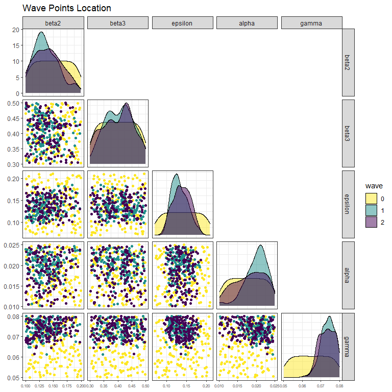
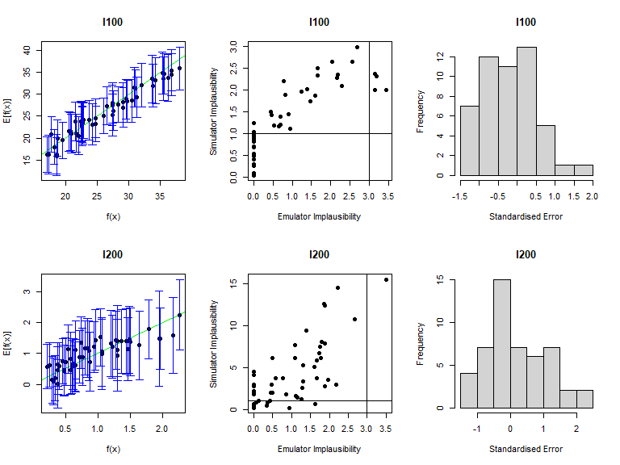
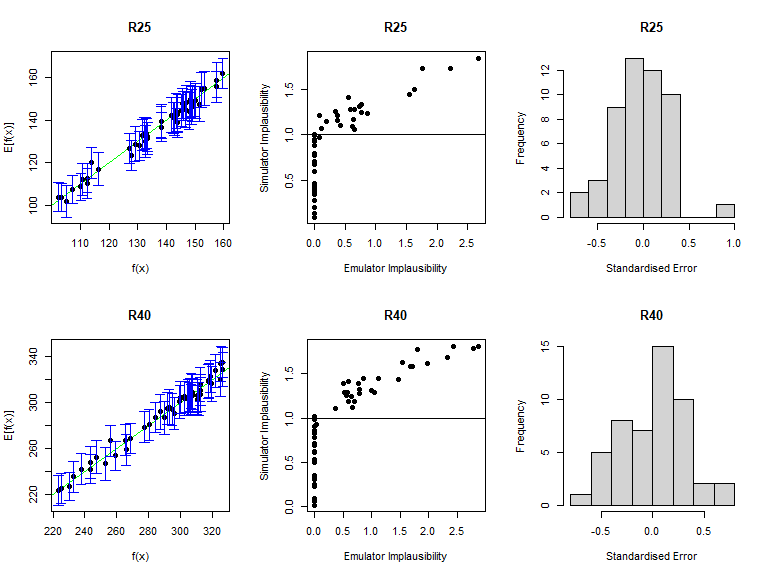
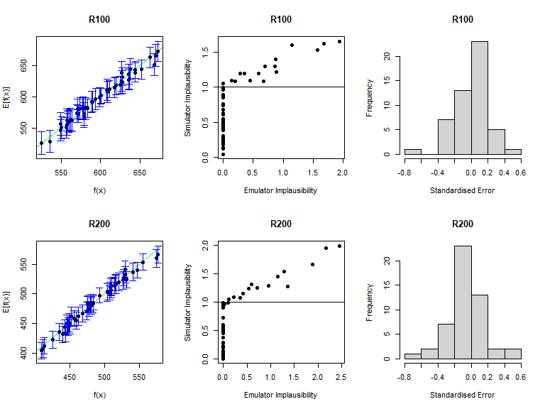

9 Second wave
new_points tend to lie in a small region inside the original input space, we will train the new emulators only on the non-implausible region found in wave one. This can be done simply setting the argument check.ranges to TRUE in the function variance_emulator_from_data.
We now run the model on new_points, bind all results to create a dataframe wave1 and we split this into two subsets, new_all_training to train the new emulators and new_all_valid to validate them. As before we select the first 5000 rows (corresponding to the first 100 parameter sets in new_points) for the training data and the last 2500 (corresponding to the last 50 parameter sets in new_points) for the validation data.
new_results <- list()
for (i in 1:nrow(new_points)) {
model_out <- get_results(unlist(new_points[i,]), nreps = 50, outs = c("I", "R"),
times = c(25, 40, 100, 200))
new_results[[i]] <- model_out
}
wave1 <- data.frame(do.call('rbind', new_results))
new_all_training <- wave1[1:5000,]
new_all_valid <- wave1[5001:7500,]To train new emulators we use variance_emulator_from_data, passing the new training data, the outputs names and the initial ranges of the parameters. We also set check.ranges to TRUE to ensure that the new emulators are trained only on the non-implausible region found in wave one.
new_stoch_emulators <- variance_emulator_from_data(new_all_training, output_names, ranges,
check.ranges=TRUE)As usual, before using the obtained emulators, we need to check their diagnostics. We use the function validation_diagnostics which takes the new emulators, the targets and the new validation data:
vd <- validation_diagnostics(new_stoch_emulators, targets, new_all_valid, plt=TRUE, row=2)
Since these diagnostics look good, we can generate new non-implausible points. Here is the second caveat: we now need to pass both new_stoch_emulators and stoch_emulators to the generate_new_runs function, since a point needs to be non-implausible for all emulators trained so far, and not just for emulators trained in the current wave:
new_new_points <- generate_new_runs(c(new_stoch_emulators, stoch_emulators), 150, targets)